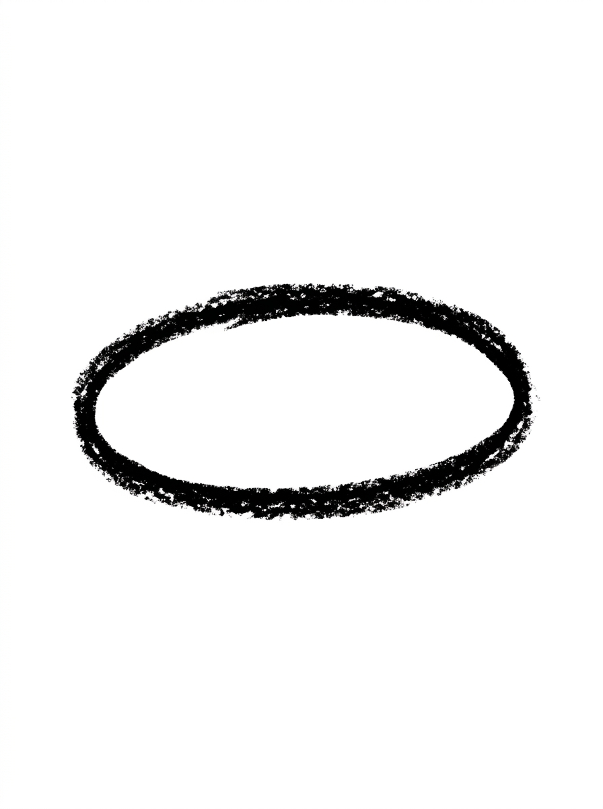
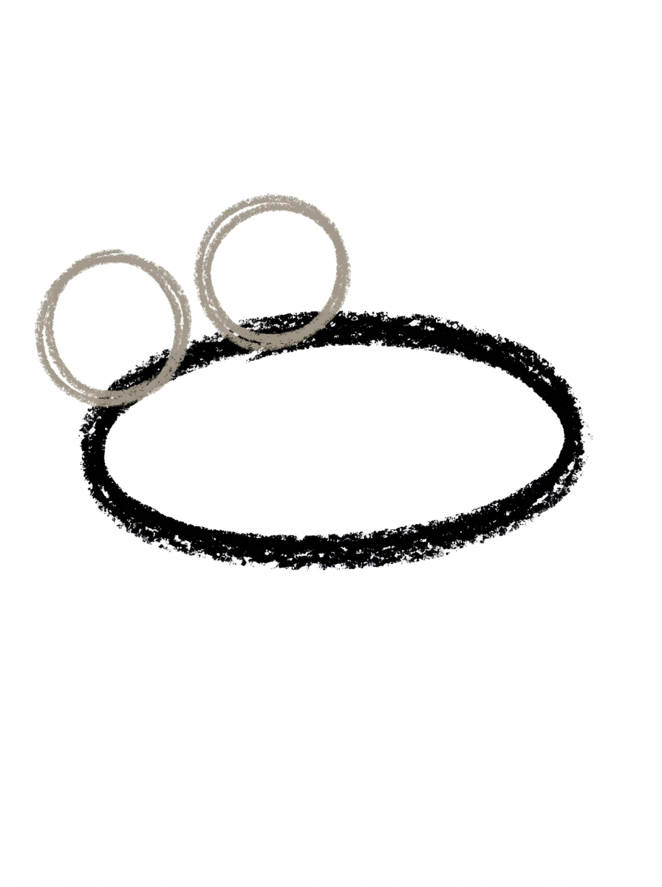
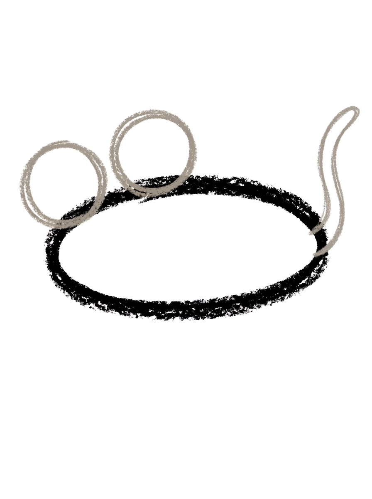
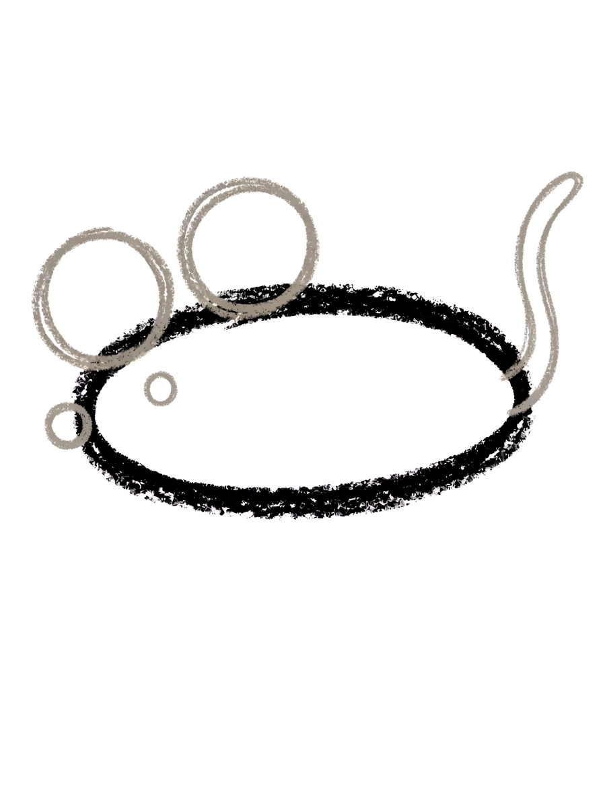
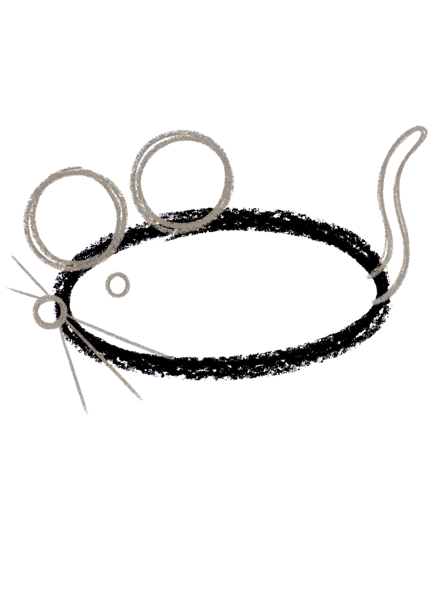

Mouse Drawing for Kids How to Draw A Mouse in 6 Easy Steps
Quick Answer
Draw a mouse in six easy steps: an oval body on its side, two round ears, a long tail sweeping up, a dot eye and nose at the front, then three whiskers from the nose. Color it light grey with a pink tail and nose. Made for ages 3 and up — no signup needed, just print and draw.
At a Glance
- Subject: How to draw a mouse
- Ages: 3+
- Steps: 6 steps
- Time: ~15 min
- Difficulty: Easy
- Supplies: Paper, crayons
A mouse is one of the easiest animals to draw well — it's really just an oval wearing two big round ears, with a long tail for balance. Kids love how the three little whiskers at the end suddenly make the whole thing look alive.
✏️ Draw Your Mouse in 6 Easy Steps
One step per box — this step by step mouse drawing shows each new part in a different color so kids can see exactly what changed.
Step 1: The Body

Draw one oval lying on its side, wider than it is tall. This is your mouse's body.
Step 2: The Ears

Draw two big round ears on top of the body near the front end, side by side, each one's bottom overlapping the body's top line.
Step 3: The Tail

Draw one long tail at the back end of the body — a thin curved shape that curves out and up, ending in a rounded point.
Step 4: The Face

Draw one round dot eye inside the body near the front end, and one small round nose at the body's front tip.
Step 5: The Whiskers

Draw three thin whisker lines fanning out from the nose, all pointing forward — one straight, one angled up, and one angled down.
Step 6: Color It In

Color your mouse! Light grey for the body and ears, soft pink for the tail and nose, black for the eye, and dark grey for the whiskers. Great drawing!
📊 Mouse Drawing by Age
Every age can join in — just adjust the job.
| Age | What they can do | Tip |
|---|---|---|
| 3-4 | Draw the sideways oval body and the two big round ears, and color it grey. | The ears are the fun part for little kids — let them draw them extra big; an oversized-ear mouse is still a mouse. |
| 4-5 | Add the long curving tail and the face — one dot eye and the small round nose at the front tip. | Placing the nose exactly at the body's front tip is the detail kids miss; a gentle finger point before they draw helps. |
| 6+ | Finish all six steps, including fanning the three thin whiskers from the nose in the right directions. | Whiskers are great fine-motor work — one straight, one angled up, one angled down — and counting them out loud keeps them at three. |
🖨️ Download Your Free Mouse Drawing Printable
The printable lays out all 6 steps one per box, big enough for little hands — kids draw right alongside each step.
⬇️ Open Free Printable 🖨️ Print🎁 Free printable for ages 3+
🐭 Cheese Treasure Hunt
Draw a home for your mouse: a wedge of cheese beside it (a triangle with a few small circles inside for holes), a mouse-hole arch in the corner of the page, and a dotted crumb trail leading from the cheese to the mouse. Then ask your child to draw the story — what happens when the mouse reaches the cheese? Bonus: draw a second, smaller mouse following behind as a friend.
What You'll Need to Draw A Mouse
You need a pencil, an eraser, and crayons or markers. The tutorial uses light grey for the body and ears, soft pink for the tail and nose, black for the eye, and dark grey for the whiskers. Because the whiskers are thin lines, a sharpened pencil or a fine-tip marker helps them stay neat.
What They're Learning
This tutorial practices ovals (the sideways body), confident circles (two big round ears), and one long, thin curving shape for the tail. The face steps build placement precision — an eye dot inside the body, a nose dot exactly on the front tip — and step 5's whiskers teach directional lines: one straight, one angled up, one angled down, plus counting to three.
Make It Yours
Color the mouse brown for a field mouse or white for a pet mouse; draw it holding a tiny heart or a flower by adding two small front paws; give it a party hat triangle on one ear; or draw a whole family — one big mouse and two small ones — using the same steps at different sizes. A mouse plus a wedge of cheese is a complete little picture all by itself.
🛒 Our Favorite Drawing Supplies
These are the supplies we reach for in our own home — washable (because kids), quality paper, and enough colors to avoid fights.
As an Amazon Associate, MomYouNeedThis earns from qualifying purchases — at no extra cost to you.
💡 Mouse Drawing Tips for Parents
Step 5's whiskers are the trickiest moment in this tutorial, not because they're hard shapes but because they're thin lines that need confidence. Have your child draw them in one quick stroke each instead of slowly creeping the pencil — fast lines come out straighter. And don't worry about an exact count on a first try; whiskers between three and five all look right.
Keep an eye on the nose placement in step 4: it belongs right on the body's front tip, because the whiskers fan out from it in step 5. If the nose lands inside the body, the whiskers will too, and the face loses its pop. A quick 'nose on the very edge' reminder before step 4 prevents the only real redo in this tutorial.
🐭 Mice in the Real World
Mice are small, quick, and everywhere — they live on every continent except Antarctica, in fields, forests, and (whenever they can manage it) houses. A mouse's whiskers are not decoration: they are feelers that measure gaps in the dark, telling the mouse whether its body will fit through before it tries. A mouse can squeeze through a hole about the size of a pencil.
Mice are also athletes: strong jumpers, good climbers, and swimmers when they must be. Their long tails help them balance on narrow edges. Storybook mice are brave little heroes; real mice survive by being clever and fast. Ask your child which kind theirs is — usually it is both.
✋ Warm-Up: Whisker Strokes
Warm up with the mouse's thinnest lines. Draw sets of three quick strokes fanning from one point — fast, light, no stopping — like tiny fireworks lying sideways. Then a few big round ears: circles standing on end, two at a time. Speed matters for whiskers; a whisker drawn slowly wobbles, and a whisker drawn boldly lands.
Thin lines that cross or double are the easiest thing in the world to forgive — whiskers overlap on real mice constantly. In the face step especially, encourage your child to keep going rather than erase: mice are drawn in quick strokes because mice are quick.
📖 Give Your Mouse a Story
Small animals have the biggest adventures. What is this mouse after — a crumb, a cheese treasure, a warm sock to sleep in? And whose house is it? A dictated sentence or two under the drawing gives the mouse its mission briefing, and mice with missions practically storyboard themselves.
The cat tutorial is the mouse's famous opposite number. Drawing the cat next stages the oldest chase in cartoons — and lets your child decide, generously, whether they ever meet.
❓ Mouse Drawing FAQs
What is the easiest way to draw a mouse?
Start with one oval lying on its side for the body, then add two big round ears on top near the front. Finish with a long curving tail at the back, a dot eye and round nose at the front, and three thin whiskers fanning from the nose.
What age is this mouse drawing for?
It's made for ages 3 and up. The body and ears are big, forgiving shapes for preschoolers, and the whiskers and tail give older kids a satisfying bit of fine-motor challenge.
What supplies do we need?
A pencil, an eraser, paper, and crayons or markers. For the tutorial's colors you'll want light grey for the body and ears, soft pink for the tail and nose, black for the eye, and dark grey for the whiskers.
Is the printable really free?
Yes — every printable on MomYouNeedThis is 100% free, including this mouse drawing tutorial. There is no signup, no email, and no catch — just download, print, and draw.
How do I print it?
Open the PDF and choose Print, then set the scale to 100% (sometimes called Actual Size) so the steps print at full size. The tutorial is designed for regular US Letter paper, and plain printer paper works perfectly.
How many whiskers does the mouse have?
Three whiskers fan out from the nose, all pointing forward: one straight, one angled up, and one angled down. The tutorial mouse faces left, so the whiskers point left from the nose at the body's front tip.
Why are the ears so big?
Big round ears are what separate a mouse from a rat or a blob in kids' drawings — two circles sitting side by side on top of the body near the front, each overlapping the body's top line a little. If the ears end up huge, the mouse just looks cuter.
Which way should the tail curve?
Draw the tail as one thin curved shape starting at the back end of the body, curving out and up, and ending in a rounded point. A tail that curls is fine too — mouse tails curve naturally, so there's no wrong answer as long as it sweeps upward.
📚 Keep Exploring
- ✏️ All 76 Drawing Tutorials 76 free step-by-step drawing tutorials for kids.
- 🐾 Animal Coloring Free printable animal coloring pages for little learners.
- ✏️ Drawing Practice Free printable drawing pre-writing worksheet for toddlers.